APÉNDICE SOBRE FISIOLOGÍA CELULAR
Uniones celulares y matriz extracelular, parte I-A: Uniones celulares
Algunas células poseen pared celular además de una membrana plasmática. Por ejemplo: algunas bacterias, arqueas, células eucariotas vegetales y fungales. Las paredes celulares son colecciones de macromoléculas insolubles secretadas por la célula que se mantienen próximas a la membrana plasmática.
A pesar de que algunas células exhiban estructuras 'accesorias' como flagelos, cilios o paredes celulares, esto no quiere decir que sus límites cambien. El límite de una célula sigue siendo definido por su membrana plasmática, y el criterio para definir el limite es el de supervivencia. Si bien una célula puede sobrevivir si se descarta su pared celular, ninguna célula sobrevive si se remueve su membrana plasmática, razón por la cual la membrana plasmática sigue siendo el límite por definición.
La presente entrada sirve de introducción elemental a las paredes celulares bacterianas, y de manera más superficial las paredes celulares arqueas y eucariotas.
Las paredes celulares son conjuntos insolubles de macromoléculas secretadas por la célula, las cuales están presentes tanto en bacterias, como hongos, algas y plantas superiores. Estas tienen dos funciones principales:
Estas son fabricadas en el interior de la célula y, posteriormente, son secretadas.
Las formas de las bacterias, algunas veces esféricas (Pneumococcus y Staphylococcus aureus), otras bastoniformes (Escherichia coli) y quizás espirales (Treponema pallidum) son definidas por sus paredes celulares. Estas paredes están hechas de peptidoglicano (también Ilamado mureína).
El peptidoglicano consiste de cadenas polisacáridas lineales entrecruzadas por pequeños péptidos. Las cadenas de peptidoglicano se componen de un monómero disacárido que, a su vez, se constituye de una molécula de ácido N-acetilmurámico (NAM) y otra de N-acetilglucosamina (NAG).
Recordando que el grupo acetilo tiene la estructura visible en la Figura 1, en la Figura 3 podemos identificar el acetilo dentro del NAG, partiendo de que, sin el grupo acetilo, lo único que tenemos es una glucosamina, lo cual no es más que una glucosa donde el hidroxilo del segundo carbono ha sido reemplazado por un grupo amino (como en la Figura 2).
Figura 1. Grupo acetilo. Este enlaza con el grupo amino de la glucosamina, formando un N-acetilglucosamina. Las imágenes pueden verse afectadas si se usa el modo oscuro.
Figura 2. Glucosamina. Obsérvese el grupo amino que reemplaza un hidroxilo en el segundo carbono.
Figura 3. N-acetilglucosamina (NAG).
Ahora bien, el ácido N-acetilmurámico se deriva de la N-acetilglucosamina, por lo cual se parte de su estructura en la Figura 3. El cambio ocurre en el tercer carbono de la glucosa. En este caso, el hidroxilo del carbono 3 pierde su hidrógeno para formar un enlace éter (Figura 4) con un ácido láctico (Figura 5) por medio de una reacción de deshidratación, lo cual quiere decir que, mientras el hidroxilo del carbono 3 pierde un hidrógeno, el ácido láctico pierde un hidroxilo completo.
Figura 4. Enlace éter.

Figura 5. Ácido láctico.
El resultado es un ácido N-acetilmurámico (Figura 6) debido a la presencia de un ácido carboxílico. El "murámico" detrás de su nombre simplemente del latín murus, para referirse a la pared celular, ya que fue aislado por primera vez como un constituyente clave de la pared celular de las bacterias.
Figura 6. Ácido N-acetilmurámico.
A modo de resumen, se tiene que el peptidoglicano es un polisacárido que se compone de monómeros disacáridos NAM y NAG por enlaces β-1,4 glucosidicos (Figura 7).
Figura 7. Peptidoglicano (Cooper, 2019, p. 540).
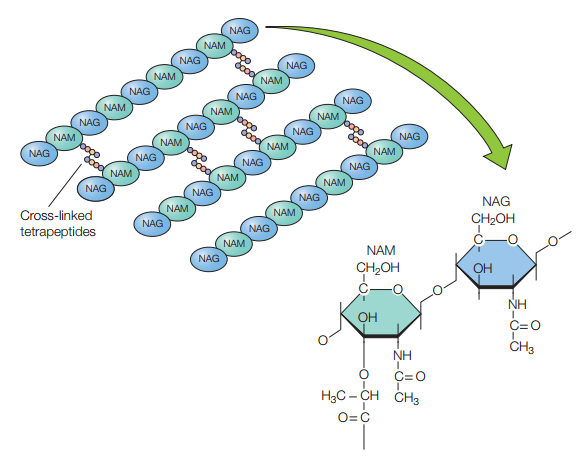Además de componerse de estos disacáridos, es menester tomar en cuenta que los NAM poseen tetrapéptidos que se enlazan entre sí por puentes de pentaglicina para mantener la rigidez y linealidad de la estructura (Figura 7). Los tetrapéptidos se enlazan al grupo carboxilo de NAM por medio de un enlace amida (Figura 8), y estos tetrapéptidos tienen dos estructuras alternativas:
Figura 8. Estructura de un monómero de peptidoglicano incluyendo el tetrapéptido enlazado al ácido láctico del NAM (Willey, Sherwood & Woolverton, 2008, p. 56).
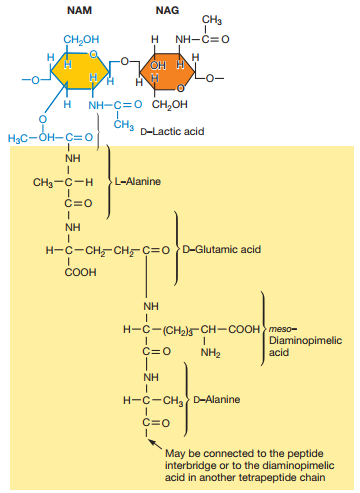Figura 9. Alternativas al tetrapéptido del NAM donde el tercer péptido puede ser DAP o L-Lys (Willey, Sherwood & Woolverton, 2008, p. 56).
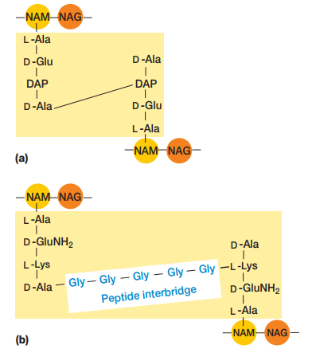Cada cadena de peptidoglicano se enlaza entre sí por medio de puentes de glicina que se forman entre los tetrapéptidos del NAM (Figura 6 y Figura 9).
El grosor de la pared celular de una bacteria puede ser estimado de acuerdo a una técnica Ilamada tinción de Gram. Esta tinción divide a las bacterias en dos clases: aquellas que reaccionan en púrpura y las otras que reaccionan en rosado (Figura 9). Aquellas en púrpura se denominan Gram-positivas, mientras que las rosadas son Gram-negativas.
Figura 10. Tinción de Gram a una mezcla de S. aureus (Gram-positiva / púrpura) y E. coli (Gram-negativa / rosado).
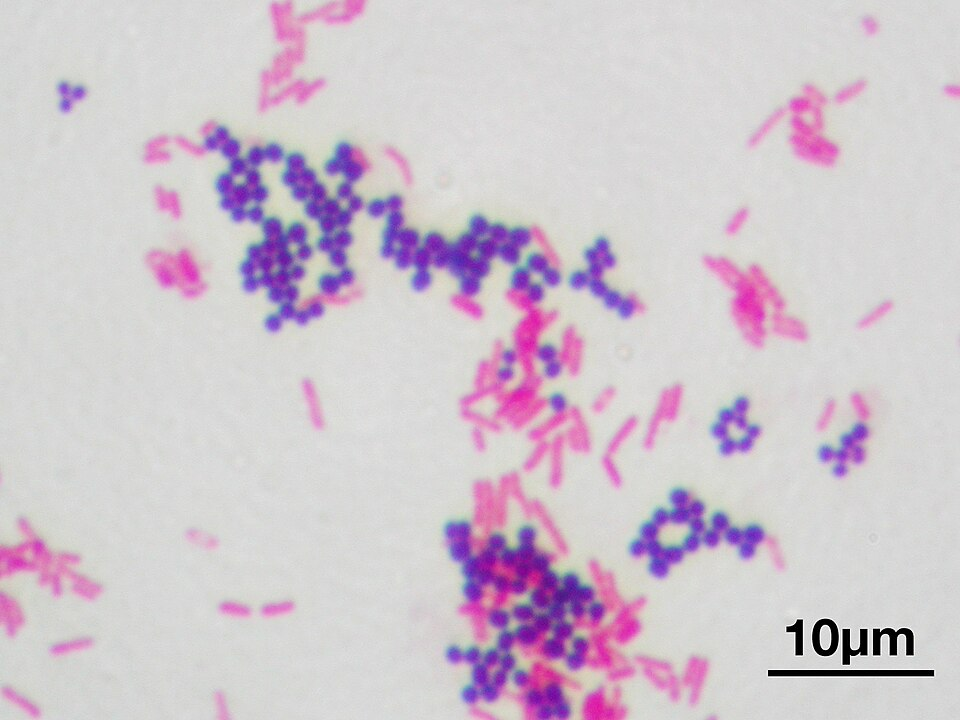Más allá del color que toman al aplicar tinción de Gram, lo que separan a estas dos clases de bacterias es el grosor de su pared celular:
El término envoltura celular puede ser empleado para referirse al complejo de membrana plasmática, pared celular y membrana externa (en el caso de bacterias Gram-negativas).
En el caso de las bacterias Gram-negativas, estas exhiben un espacio entre la membrana externa y su membrana plasmática, el cual es Ilamado espacio periplásmico. La sustancia que lo ocupa se denomina periplasma. La naturaleza del periplasma y el espacio periplásmico difiere entre bacterias Gram-positivas y Gram-negativas.
Figura 11. Diferencia entre bacterias Gram-positivas (izquierda) y Gram-negativas (derecha). PM: Membrana plasmática. W: pared de peptidoglicano Gram-positiva. OM: Membrana externa. M: Capa de peptidoglicano o mureína. P: Espacio periplásmico (Willey, Sherwood & Woolverton, 2008, p. 55).
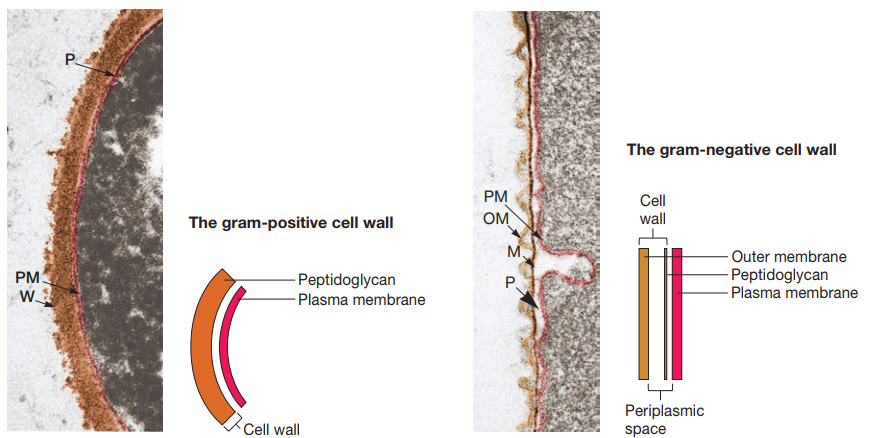La envoltura celular de las bacterias Gram-positivas se componen principalmente de una capa gruesa de peptidoglicano con grandes cantidades de ácido teicoico (Figura 12). Este es un polímero de glicerol o ribitol enlazado a través de grupos de fosfato (Figura 13). Estos se enlazan al peptidoglicano o a lípidos de la membrana plasmática (y en tal caso se Ilama ácido lipoteicoico). Se cree que tienen un papel en mantener la estructura de la pared celular.
Figura 12. Envoltura celular de las bacterias Gram-positivas (Willey, Sherwood & Woolverton, 2008, p. 57).
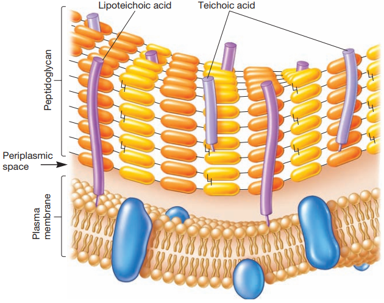Figura 13. Estructura del ácido teicoico (Willey, Sherwood & Woolverton, 2008, p. 58).
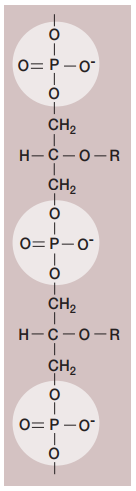Por otro Iado, dentro del periplasma de las bacterias Gram-positivas, se encuentran exoenzimas que sirven para degradar nutrientes poliméricos muy grandes para pasar por su cuenta a través de la membrana plasmática.
Ahora bien, la envoltura celular de las bacterias Gram-negativas tiene un espacio periplásmico mucho más amplio de 1-71 nm, constituyendo desde el 20% al 40% del volumen celular total de estas bacterias. Mientras que algunas proteínas periplásmicas sirven para la adquisición de nutrientes, otras sirven para la conservación de la energía. Algunas tienen cadenas de transporte de electrones en sus espacios periplásmicos.
La membrana externa de las bacterias Gram-negativas se ubica fuera de la fina capa de peptidoglicano y se vincula a la célula por dos medios:
Estas membranas externas también contienen lipopolisacáridos (LPSs) compuestos de 1) Iípido A, 2) un polisacárido nuclear y 3) cadenas de polisacáridos 0 (Figura 14).
Figura 14. Estructura de los lipopolisacáridos de la Salmonella (Willey, Sherwood & Woolverton, 2008, p. 60).
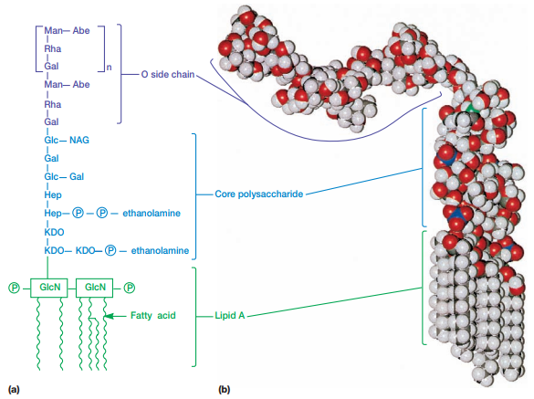El lípido A contiene dos azúcares derivados de la glucosamina, cada uno enlazado a tres ácidos grasos y un fosfato o pirofosfato. Los ácidos grasos enlazan el LPS a la membrana externa, mientras que el resto de la estructura se proyecta hacia el exterior. Por otro lado, la región central de polisacáridos conecta con el Iípido A. En la Salmonella, esta está compuesta de 10 azúcares. Por último, los O polisacáridos se enlazan a la región central de polisacáridos. Estos varían en composición entre cepas bacterianas.
Los LPSs contribuyen a la carga negativa de la superficie bacteriana. También estabilizan la estructura de la membrana externa y puede que contribuyan a la adhesión de la bacteria a superficies, así como también a la formación de biopelículas. Por último, y de mayor relevancia, los LPSs sirven para crear una barrera de permeabilidad. Se dice que evitan la entrada de sales biliares, antibióticos y otras sustancias tóxicas para la bacteria.
A pesar de los LPSs, la membrana externa es técnicamente más permeable gracias a la presencia de trímeros de porina, proteínas, los cuales permiten el pasaje de moléculas de 600-700 daltons.
La Figura 15 resume las partes de la envoltura celular de las bacterias Gram-negativas.
Figura 15. Esquema de la envoltura celular de bacterias Gram-negativas (Willey, Sherwood & Woolverton, 2008, p. 59).
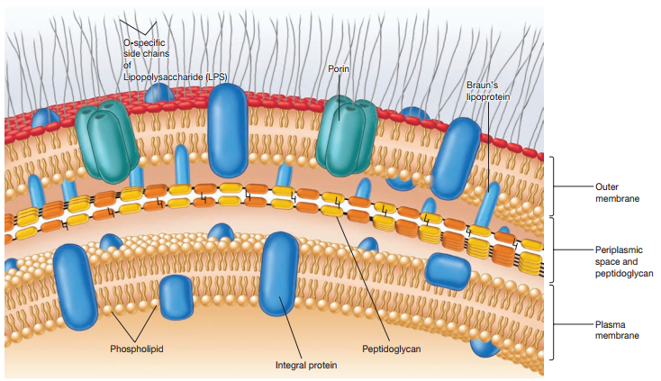Las paredes celulares de las arqueas normalmente se componen de heteropolisacáridos complejos. Por ejemplo, las arqueas generadoras de metano, como la Methanobacterium, tienen paredes celulares de pseudomureína. Esta tiene L-aminoácidos en vez de D-aminoácidos en sus tetrapéptidos y ácido N- acetiltalosaminurónico en vez de ácido N-acetilmuránico. Asimismo, sus enlaces glucosídicos son β-1,3 en vez de β-1,4 (Figura 16).
Figura 16. Estructura de la pseudomureína en las paredes celulares de arqueas (Willey, Sherwood & Woolverton, 2008, p. 63).
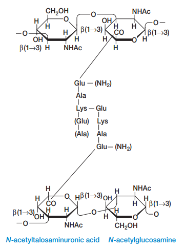Otras arqueas contienen polisacáridos complejos similares al sulfato de condroitina en el tejido conectivo de los animales. Por último, la tinción de Gram no funciona igual en las arqueas. Los colores exhibidos no se correlacionan fuertemente con una pared celular especifica como en las bacterias.
Las paredes celulares eucariotas son similares a las bacterianas. Por ejemplo, si se observan la quitina (la pared celular de las eucariotas fungales), se resalta que están hechas de N-acetilglucosamina (uno de los componentes de las paredes celulares bacterianas). La principal diferencia es que, mientras que la pared celular bacteriana se compone de monómeros disacáridos de NAM y NAG, la pared celular fungal se compone de monómeros monosacáridos de NAM. Del mismo modo, si se estudia la celulosa (la cual compone la pared celular de algas y células vegetales superiores), se nota que se compone de glucosa. Es decir, de N-acetilglucosamina donde el acetamido ha sido reemplazado por un grupo hidroxilo. Es decir, las paredes celulares eucariotas son versiones simplificadas de las paredes celulares bacterianas (ver Figura 17).
Figura 17. Comparación de la quitina con la celulosa (Cooper, 2019, p. 541).
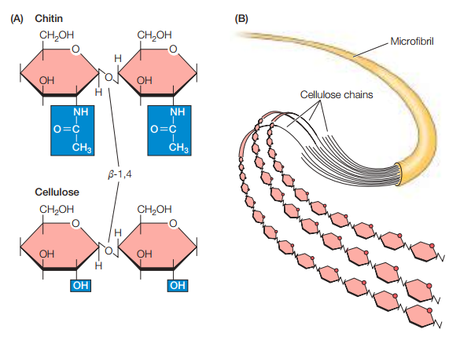Tanto en la quitina como en la glucosa se enlazan los monómeros por medio de enlaces glucosídicos β-1,4, del mismo modo que en las bacterias. Esto sugiere una continuidad entre estas especies. Por otro lado, los polímeros lineales de celulosa normalmente contienen más de 10,000 monómeros de glucosa. 36 cadenas de celulosa se asocian en paralelo entre sí para formar microfibrilos de 3-nm, los cuales se extienden muchas micras en longitud (Figura 17).
Ahora bien, estos microfibrilos de celulosa están incrustados en una matriz de proteínas y otros dos tipos de polisacáridos: hemicelulosas y pectinas (Figura 18). Por una parte, la hemicelulosa es un polisacárido ramificado que se enlaza a los microfibrilos de celulosa por medio de puentes de hidrógeno, lo cual estabiliza a la celulosa como fibras duras. Por otra parte, tanto los microfibrilos de celulosa como la hemicelulosa están embebidos en una matriz gelatinosa formada por pectinas, las cuales son polisacáridos con grandes cantidades de ácido galacturónico negativamente cargado. La Figura 19 representa gráficamente cómo se relacionan estas estructuras.
Figura 18. Hemicelulosas y pectinas (Cooper, 2019, p. 541).
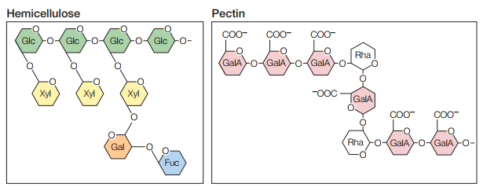Figura 19. Pared celular de las plantas (Cooper, 2019, p. 542).
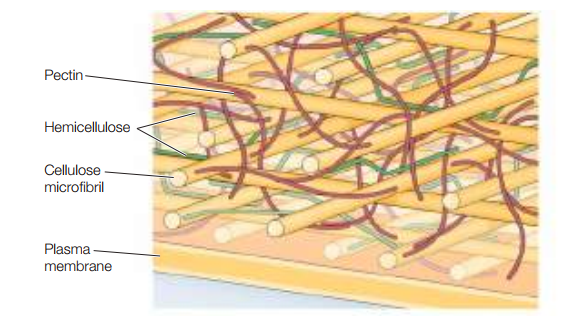La pectina puede enlazarse a iones cargados como el Ca2+ y atrapar moléculas de agua para formar gel.
Regresando a las funciones, las paredes celulares de las plantas evitan los efectos de la presión osmótica. Puesto que estas no mantienen un balance osmótico entre su citosol y los fluidos extracelulares (contrario a los animales, y afín a las bacterias), la presión osmótica constantemente guía el flujo del agua dentro de la célula. Las células vegetales son capaces de resistir este flujo de agua gracias a sus paredes de celulosa, las cuales evitan tanto que se hinchen como que estallen.
La presión de turgencia es la presión hidrostática que fuerza a la membrana plasmática a expandirse por la acumulación de agua dentro de la célula. Esta presión es la que le da rigidez a las plantas, lo cual es observable al comparar una planta hidratada con una deshidratada. Asimismo, la expansión de las plantas vegetales ocurre principalmente por la presión de turgencia más que por la fabricación de componentes en el citosol. Hormonas vegetales como la auxina activan proteínas llamadas expansinas, las cuales debilitan una región de la pared celular para que la presión de turgencia expanda la célula en esa dirección. A medida que esto ocurre, el agua que entra a la célula se almacena en la vacuola central, lo cual permite, efectivamente, expandir la célula sin incrementar la cantidad de citosol (Figura 20).
Figura 20. Expansión de una célula vegetal por medio de presión de turgencia (Cooper, 2019, p. 542).
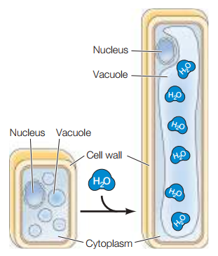A medida que la célula se expande, componentes de la pared celular son depositados fuera de la membrana plasmática (Figura 21). Entretanto, los componentes de la matriz como la hemicelulosa y la pectina se sintetizan en el aparato Golgi y luego secretados. Por último, a partir de los componentes de la pared celular, el complejo enzimático llamado celulosa sintasa los procesa para crear más celulosa.
Figura 20. Síntesis de celulosa durante la elongación celular en células de plantas superiores (Cooper, 2019, p. 543).
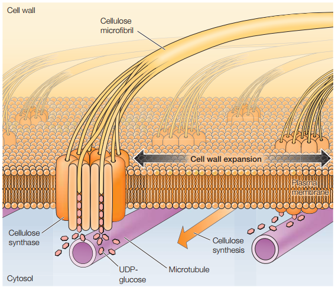Cooper, G. M. (2019). The cell: A molecular approach (8th ed.). Oxford University Press
Madigan, M. T., Bender, K. S., Buckley, D. H., Sattley, W. M., & Stahl, D. A. (2019). Brock biology of microorganisms (15th ed.). (Global ed.). Pearson
McMurry, J., Ballantine, D. S., Hoeger, C. A., & Peterson, V. E. (2018). Fundamentals of general, organic, and biological chemistry (8th ed. in SI units). Pearson
Willey, J. M., Sherwood, L. M., & Woolverton, C. J. (2008). Prescott, Harley, and Klein's microbiology. 7th ed. McGraw-Hill
Freddy J. Molero-Ramírez
fmolero@mail.uniatlantico.edu.co